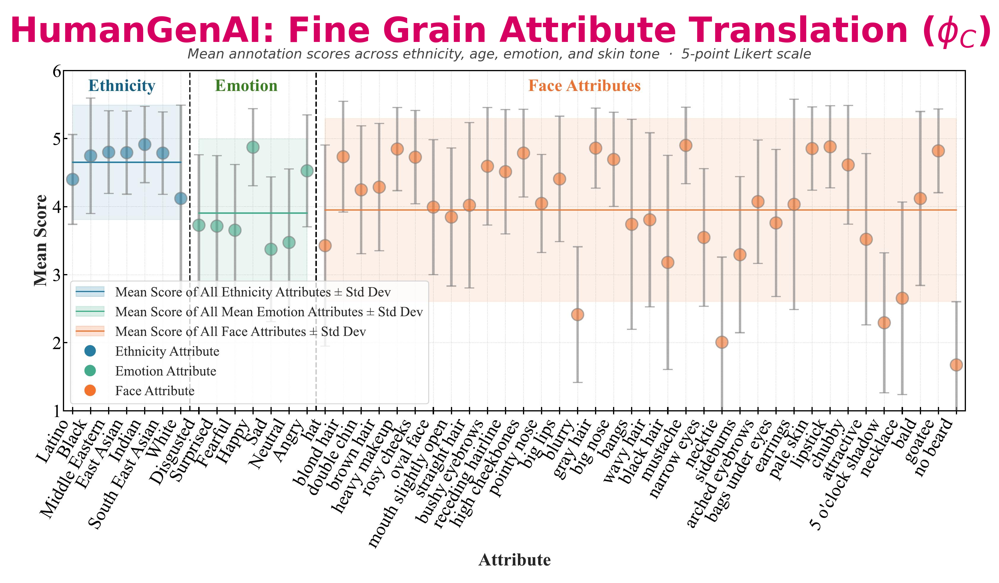
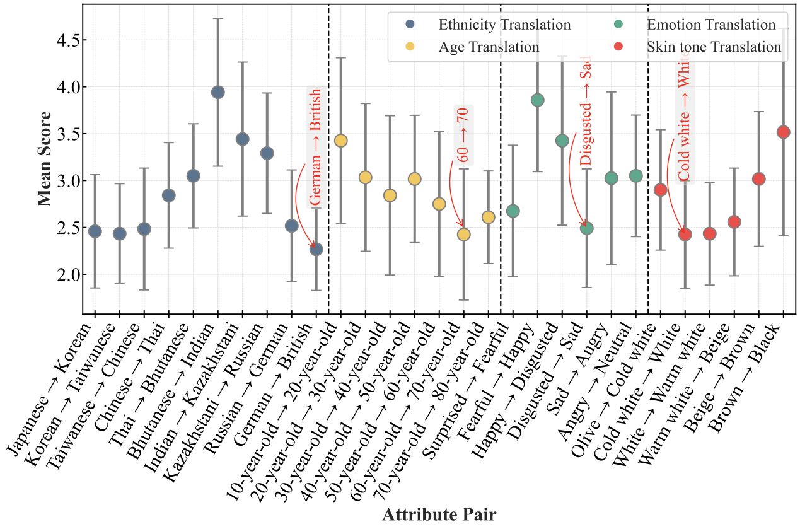
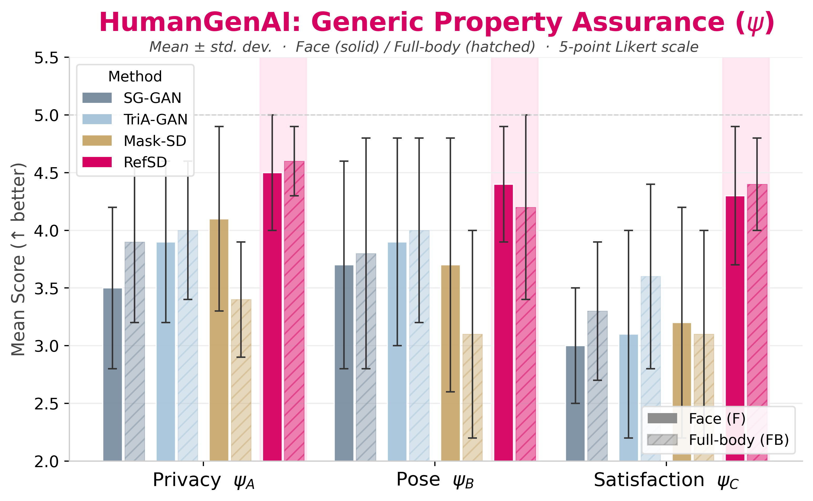
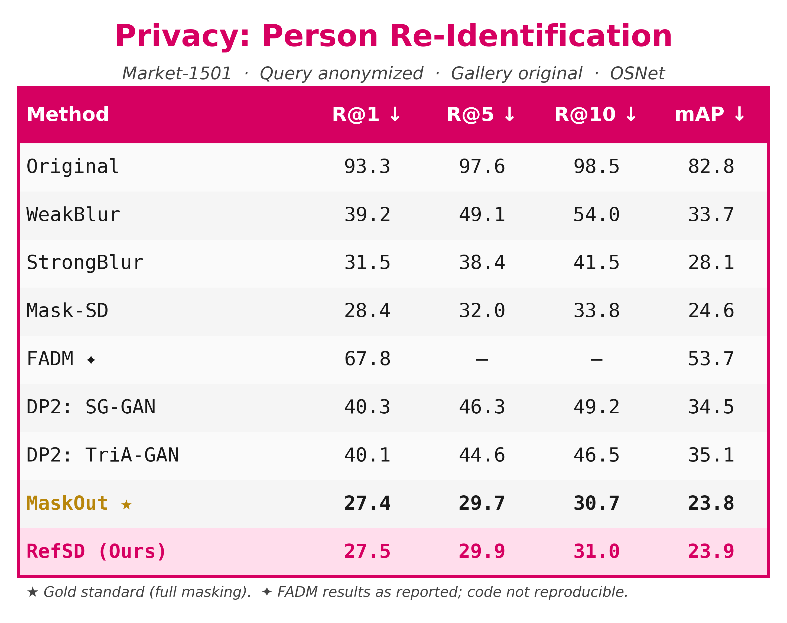
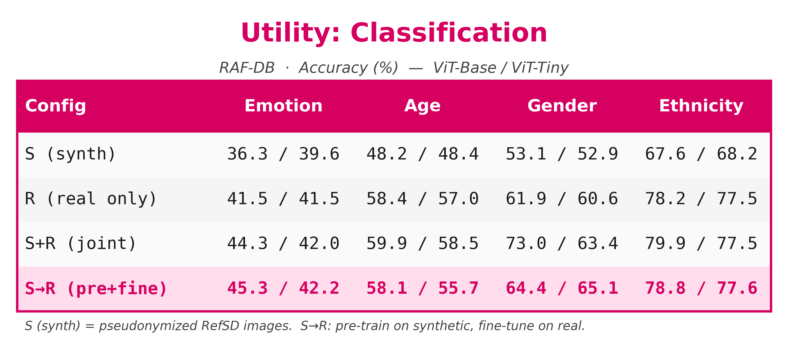
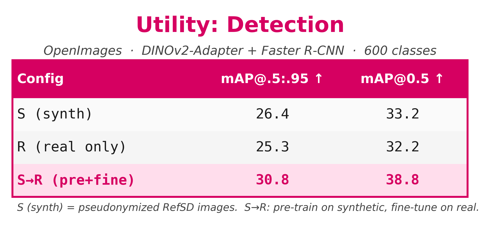
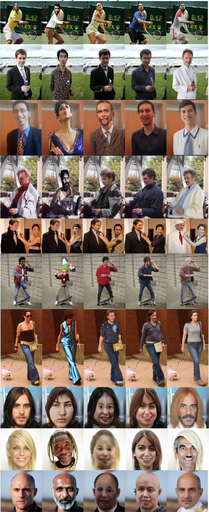
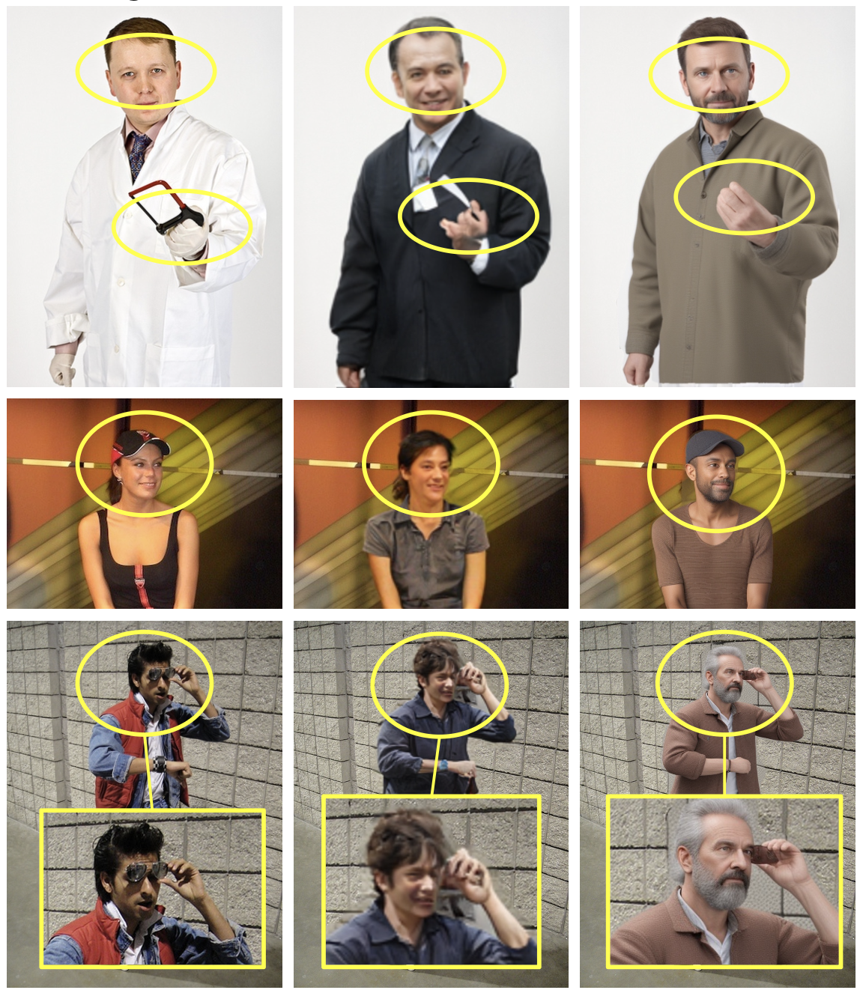

Privacy regulations (e.g., GDPR, CCPA) mandate that public datasets with permissive commercial licenses (e.g., CC BY 4.0) containing humans be pseudononymized before use. However, existing anonymization methods have notable limitations: blurring or masking degrade downstream utility, GAN-based synthesis offers limited control and photorealism, and diffusion editors may retain identity traces. To overcome these limitations, we propose Rendering Refined Stable Diffusion (RefSD), a three-stage pipeline that (1) removes real humans via segmentation and inpainting, (2) reconstructs pose-aligned, identity-free avatars through SMPL-based 3D rendering, and (3) refines appearance with text-guided diffusion for photorealism. By using rendering, RefSD provides explicit control over body shape, clothing and pose, enabling diverse yet structured avatar generation. To validate human alignment, we introduce HumanGenAI, a human-annotation suite for evaluating privacy preservation, perceptual satisfaction, and attribute-generation fidelity. Beyond HumanGenAI, we conduct re-identification and downstream task benchmarks, demonstrating that RefSD matches the re-ID performance of complete masking while achieving competitive utility relative to real images. Together, RefSD and HumanGenAI establish a scalable pipeline and benchmark for privacy-compliant human synthesis in image datasets.

RefSD is designed as a privacy-first full-body pseudonymization pipeline that replaces humans with pose-aligned synthetic counterparts rather than editing the original subject in place. The paper frames this as a privacy-utility bridge: the original human is completely removed, posture is preserved through 3D body estimation, and diffusion is used only after a synthetic avatar has already been inserted into the scene.
This separation between structure and appearance matters. Rendering gives RefSD explicit geometric control, while text-guided diffusion improves realism and attribute controllability without copying source identity. The resulting images stay closer to the original scene layout than pure masking, while avoiding the identity leakage risks of direct image editing.
Detect the person, recover 3D body parameters, then fully remove the original human with segmentation and inpainting so no identifiable traces remain in the background.
Build a pose-aligned SMPL avatar, sample from a diverse bank of base bodies and textures, and composite that identity-free avatar back into the sanitized scene.
Use Canny edges from the rendered avatar plus text prompts for demographics, clothing, and context to refine the synthetic person into a more photorealistic yet still privacy-compliant human.

HumanGenAI is introduced to benchmark whether pseudonymized humans are not only private, but also aligned with human expectations for realism, posture, and controllable attribute generation. The framework combines structured human evaluation with downstream task analysis so privacy, quality, and utility are judged together instead of in isolation.
Tests how well RefSD follows prompts and preserves attribute intent.
Measures whether pseudonymized images remain private, aligned, and visually acceptable.
These plots summarize the HumanGenAI findings for facial fidelity, fine-grained attribute translation, and generic human judgments over privacy, pose, and overall satisfaction.



RefSD pairs strong privacy with usable synthetic data. In the paper’s human evaluation, RefSD scores highest across privacy, pose preservation, and perceptual satisfaction, and in the re-identification benchmark it nearly matches the privacy of completely masking the person.




Scroll through the panel to browse more side-by-side qualitative comparisons across all five methods.

Additional close-up comparisons across the original image, DP2: TRiA-GAN, and RefSD.

Rows: Original, Mask-SD, DP2: TRiA-GAN, zoomed crops, and RefSD (Ours).
RefSD preserves pose and scene layout better than Mask-SD and DP2 while producing more natural-looking people. The hardest remaining cases are subtle attribute edits, occlusions, and occasional body mismatches.
@inproceedings{patwari2026refsd,
title = {Privacy-Compliant Human Data Synthesis in Images for GDPR},
author = {Patwari, Kartik and Schneider, David and Sun, Xiaoxiao and Chuah, Chen-Nee and Lyu, Lingjuan and Sharma, Vivek},
booktitle = {IEEE International Conference on Automatic Face and Gesture Recognition (FG)},
year = {2026}
}